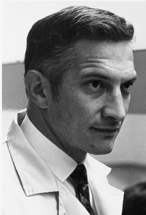

En julio de 1959 inscribi� la patente de un tipo de circuito integrado. Por este trabajo independiente sobre el circuito
integrado, registrado unos meses m�s tarde que los de su primer inventor, Jack Kilby, y por el impacto que tuvieron sus
aplicaciones en el mundo ambos recibieron el reconocimiento de tres presidentes de los Estados Unidos. Adem�s fue destinatario
de otros premios, como la Medalla Nacional de Tecnolog�a otorgado por Ronald Reagan en 1987, y el concedido por la Academia
Nacional de Ingenier�a, entregado por George H. W. Bush en 1989. En el bicentenario de la ley de patentes, celebrado en
1990, recibi� la Medalla en reconocimiento a su carrera, conjuntamente con Jack Kilby y John Bardeen entre otros.
Asimismo recibi� la Medalla Stuart Ballantine del Instituto Franklin en 1966; la Medalla de Honor del Instituto de Ingenieros
El�ctricos y Electr�nicos en 1978; la Medalla Nacional de Ciencias en 1979; fue elegido miembro de la Academia Americana
de las Artes y las Ciencias en 1980; y la Academia Nacional de Ingenier�a le otorg� el Premio Charles Stark Draper en 1989,
un a�o antes de su fallecimiento. La universidad donde estudi�, Grinnell College, le puso su nombre al edificio de la facultad
de ciencias.
Con motivo del cumplea�os n�mero 84 de Robert Noyce, Google dise�� un logotipo especial en honor al co-fundador de Intel.
En su af�n investigador, lleg� a registrar hasta quince patentes relacionadas con el campo de la electr�nica y los microprocesadores.
La Fundaci�n Noyce fue creada por su familia en 1991. Esta fundaci�n se dedica a mejorar la educaci�n p�blica en matem�ticas
y ciencias en los niveles de primaria y secundaria.
|
Fotos

|